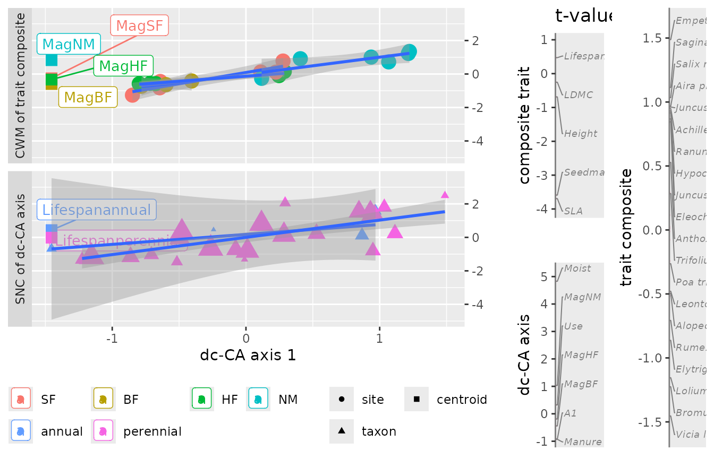

The douconca package
The aim of the douconca package is to help ecologists
unravel trait-environment relationships from an abundance data table
with associated multi-trait and multi-environment data tables. A popular
method to such aim is RLQ (Dolédec et al. 1996; Dray et al. 2014), which also a
three-tables method. RLQ is available in the R-package ade4
(Dray and Dufour
2007; Thioulouse et al.
2018). The douconca package provides an
alternative method, termed double-constrained correspondence analysis
(dc-CA), which is a natural extension of the commonly used method of
community-weighted means (CWMs) regression (ter Braak and van Rossum 2025; Ter Braak, Šmilauer, and Dray 2018; Kleyer et al. 2012).
As dc-CA is based on both regression analysis and ordination (factorial
analysis), it allows for the usual forms of testing, model building, and
of biplots of resulting scores.
The value of dc-CA compared to RLQ, GLMM3 and CWM-regression is discussed, with examples, in ter Braak and van Rossum (2025).
The douconca package has a
formula-interface to specify the dc-CA model, and
scores, anova, plot and
predict functions, mostly fairly similar to those in the
vegan package (Oksanen et al. 2024) on to
which douconca is based.
Double constained correspondence analysis
As RLQ, dc-CA seeks for an ordination (i.e. a low-dimensional representation of) of the multi-trait, multi-environment relationships, but dc-CA differs from RLQ in that dc-CA is based on regression with the traits and environmental variables as predictors, whereas RLQ is based on co-variance. The dc-CA method thus allows for variation-partitioning and the type of model-building that is familiar to users of regression analysis, whereas RLQ does not.
A dc-CA axis consists of two regression models (linear combinations), one of traits and the other of environmental predictors, the fitted values of which can be thought of as a composite trait and a composite environmental gradient. The response variables of these regressions are species niche centroids and CWMs of such composites. This circularity is typical for any eigenvalue ordination method. The linear combinations maximizes the fourth-corner correlation between the composite trait and composite environmental gradient. The dc-CA eigenvalues are squared fourth-corner correlations, but also variances, namely the amounts of variation in the abundance data that the consecutive axes explain (Ter Braak, Šmilauer, and Dray 2018).
Statistical testing is by the max test (Ter Braak, Cormont, and Dray
2012), evaluated by extensive simulation (Ter Braak
2019). This test combines two permutations tests, one
permuting sites and the other permuting species, the maximum P-value of
which is the final P-value. As in the vegan package, the
permutations are specified via the permute package (Simpson 2022),
so as to allow for analysis of hierarchical and nested data designs
(Gobbi et al.
2022).
In douconca, a dc-CA model is specified by two formulas:
a formula for the sites (rows) with environmental
predictors and a formula for the species (columns) with
trait predictors, which both may contain factors, quantitative variables
and transformations thereof, and interactions, like in any (generalized)
linear regression model. The formulas specify the constraints applied to
the site and species scores; without constraints dc-CA is simply
correspondence analysis.
The double constrained version of principal components analysis also exists and is available in the Canoco software (Ter Braak and Šmilauer 2018), but has less appeal in ecological applications as it lacks ecological realism, ease of interpretation and the link to methods, such as CWM-regression and fourth-corner correlation analysis, which have proven to be useful in trait-based ecology.
A full-length treatment of dc-CA, with examples, is given in ter
Braak and van Rossum (2025).
# Example data and questions
We use the dune_trait_env data in the package to
illustrate dc-CA. It consists of the abundances of 28 plant species in
20 meadows (plots, here called sites), trait data for these plant
species and environmental data of these sites.
library(douconca)
data("dune_trait_env")
names(dune_trait_env)
#> [1] "comm" "traits" "envir"
dim(dune_trait_env$comm[, -1]) ## without the variable "Sites"
#> [1] 20 28
dim(dune_trait_env$traits)
#> [1] 28 11
dim(dune_trait_env$envir)
#> [1] 20 10
names(dune_trait_env$traits)
#> [1] "Species" "Species_abbr" "SLA" "Height" "LDMC"
#> [6] "Seedmass" "Lifespan" "F" "R" "N"
#> [11] "L"
names(dune_trait_env$envir)
#> [1] "Sites" "A1" "Moist" "Mag" "Use" "Manure" "X" "Y"
#> [9] "X_lot" "Y_lot"There are five morphological traits (from the LEDA trait
database) and four ecological traits (Ellenberg indicator values for
moisture (F), acidity (R), nutrients (N) and light (L)).
There are five environmental variables and two sets of two spatial
coordinates, which are approximately equal. The X and
Y are the coordinates of the plot. The lot-variables are
the center of the meadow where the sample has been taken.
The type of questions that dc-CA is able to address is:
- How many dimenstions are needed to represent the major part of the trait-environment relations?
- Is the trait-environment relationship statistically significant?
- How many dimensions are statistically significant?
- What is the importance of a variable in a dc-CA axis?
- What is trait-structured variation and which of the trait sets has the larger such variation?
- Which of the trait sets (morphological versus ecological) is more closely related to the environmental variables?
Basic analysis
The next code gives a basic dc-CA analysis. The response matrix or
data frame must be numerical, with columns representing the species. The
first variable (Sites) must therefore be deleted.
Y <- dune_trait_env$comm[, -1] # must delete "Sites"
mod <- dc_CA(formulaEnv = ~ A1 + Moist + Use + Manure + Mag,
formulaTraits = ~ SLA + Height + LDMC + Seedmass + Lifespan,
response = Y,
dataEnv = dune_trait_env$envir,
dataTraits = dune_trait_env$traits)
#> Step 1: the CCA ordination of the transposed matrix with trait constraints,
#> useful in itself and also yielding CWMs of the orthonormalized traits for step 2.
#>
#> Call: cca0(formula = formulaTraits, response = tY, data =
#> out0$data$dataTraits)
#>
#> Inertia Proportion Rank
#> Total 2.3490 1.0000
#> Constrained 0.6776 0.2885 5
#> Unconstrained 1.6714 0.7115 19
#>
#> Inertia is scaled Chi-square
#>
#> Eigenvalues for constrained axes:
#> CCA1 CCA2 CCA3 CCA4 CCA5
#> 0.26839 0.19597 0.12356 0.07003 0.01967
#>
#> Eigenvalues for unconstrained axes:
#> CA1 CA2 CA3 CA4 CA5 CA6 CA7 CA8
#> NA NA NA NA NA NA NA NA
#> (Showing 8 of 19 unconstrained eigenvalues)
#>
#> mean, sd, VIF and canonical coefficients with their optimistic [!] t-values:
#> Avg SDS VIF Regr1 tval1
#> SLA 24.6468 6.3438 1.1888 0.4401 4.1794
#> Height 25.1272 15.6848 1.3033 0.1283 1.1640
#> LDMC 244.5084 70.9729 1.1791 0.0278 0.2647
#> Seedmass 0.6543 0.6688 1.0784 0.3708 3.6980
#> Lifespanperennial 0.9607 0.1944 1.0964 -0.0578 -0.5718
#>
#> Step 2: the RDA ordination of CWMs of the orthonormalized traits
#> of step 1 with environmental constraints:
#>
#> Call: rda(formula = out1$CWMs_orthonormal_traits ~ A1 + Moist + Use +
#> Manure + Mag, data = out1$data$dataEnv)
#>
#> Inertia Proportion Rank
#> Total 0.6776 1.0000
#> Constrained 0.4454 0.6573 5
#> Unconstrained 0.2322 0.3427 5
#>
#> Inertia is variance
#>
#> Eigenvalues for constrained axes:
#> RDA1 RDA2 RDA3 RDA4 RDA5
#> 0.23680 0.10903 0.05934 0.03792 0.00233
#>
#> Eigenvalues for unconstrained axes:
#> PC1 PC2 PC3 PC4 PC5
#> 0.12017 0.05836 0.03455 0.01337 0.00575
#>
#> mean, sd, VIF and canonical coefficients with their optimistic [!] t-values:
#> Avg SDS VIF Regr1 tval1
#> A1 4.85 2.1240 1.6967 -0.0605 -0.9172
#> Moist 2.90 1.7578 1.7658 0.3250 4.8293
#> Use 1.90 0.7681 1.7825 0.0219 0.3239
#> Manure 1.75 1.4448 9.3847 -0.1444 -0.9306
#> MagBF 0.15 0.3571 4.5016 -0.0475 -0.4421
#> MagHF 0.25 0.4330 2.6715 -0.0156 -0.1890
#> MagNM 0.30 0.4583 9.5666 0.1622 1.0352
#> Avg SDS VIF Regr1 tval1
#> SLA 24.6468 6.3438 1.1888 -0.8196 -3.6933
#> Height 25.1272 15.6848 1.3033 -0.1598 -0.6877
#> LDMC 244.5084 70.9729 1.1791 -0.0562 -0.2542
#> Seedmass 0.6543 0.6688 1.0784 -0.7586 -3.5896
#> Lifespanperennial 0.9607 0.1944 1.0964 0.1006 0.4722
#>
#> weighted variance
#> total 2.349
#> traits_explain 0.678
#> env_explain 1.323
#> constraintsTE 0.445
#> attr(,"meaning")
#> meaning
#> total "total inertia (= weighted variation)"
#> traits_explain "trait-constrained variation"
#> env_explain "environment-constrained variation"
#> constraintsTE "trait-constrained variation explained by the predictors in formulaEnv"In douconca, dc-CA is calculated in two steps that
provide useful information each. Step 1 of the dc-CA algorithm
summarizes the canonical correspondence analysis (CCA) of the transposed
response matrix on to the trait data using
formulaTraits = ~ SLA + Height + LDMC + Seedmass + Lifespan.
The morphological traits in this formula explain 28.85% of the total
inertia (variance) in the abundance data Y. This inertia
(0.6776) is called the trait-structured variation. Inertia is in general
a weighted variance, but in this case it is thus unweighted as sites
have equal weight in the analysis, because
divideBySiteTotals is true by defaults. Formally, it is the
total (unweighted) variance in the community weighted means of
orthonormalized traits (the traits are orthonormalized in Step 1). The
trait-structured variation is further analyzed in Step 2 using
redundancy analysis (RDA). Step 2 shows that 65.73% of this variation
can be explained by the environmental variables using
formulaEnv = ~ A1 + Moist + Use + Manure + Mag. The
constrained axes of this RDA are also the dc-CA eigenvalues:
mod$eigenvalues
#> dcCA1 dcCA2 dcCA3 dcCA4 dcCA5
#> 0.23680387 0.10903220 0.05933626 0.03791909 0.00232876The first axis explains 53% of the trait-environment variance and
this axis is dominated by moisture and by SLA and Seedmass, as judged by
the size of their regression coefficient and (optimistic) t-value on
this axis in the print of the model. The default plot shows
the intra-set correlations of the variables with the axis, but t-values
can be visualized with
plot(mod, gradient_description = "t")
Statistical testing
There are two-ways to statistically test the model: (1) the omnibus
test (using all five dimensions) is obtained with
anova(mod), giving a P-value of about 0.02 and (2) a test
per dc-CA axis, obtained by
set.seed(1)
anova(mod, by = "axis")
#> $species
#> Species-level permutation test using dc-CA
#> Model: dc_CA(formulaEnv = ~A1 + Moist + Use + Manure + Mag, formulaTraits = ~SLA + Height + LDMC + Seedmass + Lifespan, response = Y, dataEnv = dune_trait_env$envir, dataTraits = dune_trait_env$traits)
#> Residualized predictor permutation
#>
#> df ChiSquare R2 F Pr(>F)
#> dcCA1 1 0.23680 0.179002 5.9370 0.087 .
#> dcCA2 1 0.10903 0.082419 2.7336 0.476
#> dcCA3 1 0.05934 0.044853 1.4877 0.760
#> dcCA4 1 0.03792 0.028663 0.9507 0.816
#> dcCA5 1 0.00233 0.001760 0.0584 1.000
#> Residual 22 0.87749
#> ---
#> Signif. codes: 0 '***' 0.001 '**' 0.01 '*' 0.05 '.' 0.1 ' ' 1
#>
#> $sites
#> Df ChiSquare R2 F Pr(>F)
#> dcCA1 1 0.236804 0.34946 12.2380 0.001 ***
#> dcCA2 1 0.109032 0.16090 7.0435 0.003 **
#> dcCA3 1 0.059336 0.08757 4.0887 0.041 *
#> dcCA4 1 0.037919 0.05596 2.7762 0.132
#> dcCA5 1 0.002329 0.00344 0.1805 0.953
#> Residual 14 0.232199
#> ---
#> Signif. codes: 0 '***' 0.001 '**' 0.01 '*' 0.05 '.' 0.1 ' ' 1
#>
#> $maxP
#> Max test combining the community- and species- level tests
#> Model: dc_CA(formulaEnv = ~A1 + Moist + Use + Manure + Mag, formulaTraits = ~SLA + Height + LDMC + Seedmass + Lifespan, response = Y, dataEnv = dune_trait_env$envir, dataTraits = dune_trait_env$traits)
#>
#> Taken from the species-level test:
#> Residualized predictor permutation
#> Permutation: free
#> Number of permutations: 999
#>
#> df ChiSquare R2 F Pr(>F)
#> dcCA1 1 0.23680 0.179002 5.9370 0.087 .
#> dcCA2 1 0.10903 0.082419 2.7336 0.476
#> dcCA3 1 0.05934 0.044853 1.4877 0.760
#> dcCA4 1 0.03792 0.028663 0.9507 0.816
#> dcCA5 1 0.00233 0.001760 0.0584 1.000
#> Residual 22 0.87749
#> ---
#> Signif. codes: 0 '***' 0.001 '**' 0.01 '*' 0.05 '.' 0.1 ' ' 1In the test per axis, the first axis has P-values of 0.09 and 0.001 at the species- and site-level, respectively, so that the P-value of the max test is 0.09. A little more explanation may be instructive. The species-level test consists of testing the (weighted) regression of the species-niche-centroids with respect to orthonormalized environmental variables against the traits. The site-level test consists of testing the (in this case, unweighted) regression of the community-weighted means of orthonormalized traits against the environmental variables. Both tests are carried out by permutation, the first by permuting species in the trait data, the second by permuting sites in the environmental data. A new dc-CA is carried out for each permuted data set. For a full description see under Details in the help system.
Fitted values and predictions
There are three kinds of fitted values (and of predictions for new data):
- fitted traits per site, obtained with
predict(mod, type = "traits" ) - fitted environmental values per species, obtained with
predict(mod, type = "env") - fitted abundances, obtained with
predict(mod, type = "response" )
The fitted traits per site are simply fitted community-weighted means
and the fitted environmental values are fitted species-niche centroids,
as is clearer from the statements fitted(mod, type = "CWM")
and fitted(mod, type = "SNC"), respectively. Note that 10%
of the fitted abundance values is negative in our example. Negative
values indicate likely absences or low abundance values of species with
the specified traits and environmental values.
Which set of traits is most closely related to abundance and to the environment?
In this section, we pose the question whether the set of morphological (functional) traits is more or less related to species abundance and to the environmental variables than the set of ecological traits.
mod_e <- dc_CA(formulaEnv = ~ A1 + Moist + Manure + Use + Mag,
formulaTraits = ~ F + R + N + L,
response = Y,
dataEnv = dune_trait_env$envir,
dataTraits = dune_trait_env$traits)
#> Step 1: the CCA ordination of the transposed matrix with trait constraints,
#> useful in itself and also yielding CWMs of the orthonormalized traits for step 2.
#>
#> Call: cca0(formula = formulaTraits, response = tY, data =
#> out0$data$dataTraits)
#>
#> Inertia Proportion Rank
#> Total 2.3490 1.0000
#> Constrained 0.8701 0.3704 4
#> Unconstrained 1.4789 0.6296 19
#>
#> Inertia is scaled Chi-square
#>
#> Eigenvalues for constrained axes:
#> CCA1 CCA2 CCA3 CCA4
#> 0.4771 0.3122 0.0580 0.0228
#>
#> Eigenvalues for unconstrained axes:
#> CA1 CA2 CA3 CA4 CA5 CA6 CA7 CA8
#> NA NA NA NA NA NA NA NA
#> (Showing 8 of 19 unconstrained eigenvalues)
#>
#> mean, sd, VIF and canonical coefficients with their optimistic [!] t-values:
#> Avg SDS VIF Regr1 tval1
#> F 6.1126 1.6685 1.1323 0.6048 8.2493
#> R 5.8061 1.1894 1.7564 0.0170 0.1865
#> N 5.1674 1.6303 1.7822 -0.1358 -1.4764
#> L 7.3839 0.8774 1.1378 0.1424 1.9382
#>
#> Step 2: the RDA ordination of CWMs of the orthonormalized traits
#> of step 1 with environmental constraints:
#>
#> Call: rda(formula = out1$CWMs_orthonormal_traits ~ A1 + Moist + Manure +
#> Use + Mag, data = out1$data$dataEnv)
#>
#> Inertia Proportion Rank
#> Total 0.8701 1.0000
#> Constrained 0.6331 0.7277 4
#> Unconstrained 0.2369 0.2723 4
#>
#> Inertia is variance
#>
#> Eigenvalues for constrained axes:
#> RDA1 RDA2 RDA3 RDA4
#> 0.3684 0.2452 0.0141 0.0054
#>
#> Eigenvalues for unconstrained axes:
#> PC1 PC2 PC3 PC4
#> 0.14787 0.06377 0.01573 0.00954
#>
#> mean, sd, VIF and canonical coefficients with their optimistic [!] t-values:
#> Avg SDS VIF Regr1 tval1
#> A1 4.85 2.1240 1.6967 0.1527 1.3122
#> Moist 2.90 1.7578 1.7658 0.4584 3.8618
#> Manure 1.75 1.4448 9.3847 0.0243 0.0888
#> Use 1.90 0.7681 1.7825 0.0886 0.7432
#> MagBF 0.15 0.3571 4.5016 -0.0086 -0.0452
#> MagHF 0.25 0.4330 2.6715 0.0136 0.0930
#> MagNM 0.30 0.4583 9.5666 0.1136 0.4110
#> Avg SDS VIF Regr1 tval1
#> F 6.1126 1.6685 1.1323 0.8158 6.0720
#> R 5.8061 1.1894 1.7564 -0.1812 -1.0830
#> N 5.1674 1.6303 1.7822 -0.1905 -1.1304
#> L 7.3839 0.8774 1.1378 0.3043 2.2594
#>
#> weighted variance
#> total 2.349
#> traits_explain 0.870
#> env_explain 1.323
#> constraintsTE 0.633
#> attr(,"meaning")
#> meaning
#> total "total inertia (= weighted variation)"
#> traits_explain "trait-constrained variation"
#> env_explain "environment-constrained variation"
#> constraintsTE "trait-constrained variation explained by the predictors in formulaEnv"The entry traits_explain is 0.87, which is the variance
in the abundance data that is explained by the traits. It can directly
be compared to the corresponding entry in the previous model, which is
0.678. The entry constraintsTE is the variance in abundance
data that is explained by traits and environmental variables jointly.
Its value in the second model is higher than that in the first. On
closer examination of the results, the second eigenvalue of the last
model is even higher than the first one of the first model and, indeed,
the first two dc-CA axes are significant as can be seen from an
anova:
anova(mod_e, by = "axis")$max
#> Max test combining the community- and species- level tests
#> Model: dc_CA(formulaEnv = ~A1 + Moist + Manure + Use + Mag, formulaTraits = ~F + R + N + L, response = Y, dataEnv = dune_trait_env$envir, dataTraits = dune_trait_env$traits)
#>
#> a mix the species- (traits) and community- (environment) levels:
#>
#> df ChiSquare traitP envP Pr(>F)
#> dcCA1 1 0.36835 0.001 0.002 0.002 **
#> dcCA2 1 0.24525 0.001 0.002 0.002 **
#> dcCA3 1 0.01413 0.984 0.675 0.984
#> dcCA4 1 0.00541 0.993 0.704 0.993
#> ---
#> Signif. codes: 0 '***' 0.001 '**' 0.01 '*' 0.05 '.' 0.1 ' ' 1The fourth-corner correlation of the best linear combination of the ecological traits with the best linear combination of the environmental variables is
compared to 0.49 for the best linear combination of the morphological traits. In conclusion, the ecological traits explain more of the abundance data and are closer related to the environmental variables.
Do the morphological traits contribute after accounting for the ecological traits?
Do the morphological traits carry important additional information on
the species (beyond their ecological traits) for understanding which
species occur where? (i.e. for understanding the species-environment
relationships). To address this question, specify the ecological traits
as Condition in the trait formula and perform an
anova of the resulting model.
mod_mGe <- dc_CA(formulaEnv = ~ A1 + Moist + Manure + Use + Mag,
formulaTraits = ~ SLA + Height + LDMC + Seedmass + Lifespan +
Condition(F + R + N + L),
response = Y,
dataEnv = dune_trait_env$envir,
dataTraits = dune_trait_env$traits, verbose = FALSE)
anova(mod_mGe, by= "axis")$max
#> Max test combining the community- and species- level tests
#> Model: dc_CA(formulaEnv = ~A1 + Moist + Manure + Use + Mag, formulaTraits = ~SLA + Height + LDMC + Seedmass + Lifespan + Condition(F + R + N + L), response = Y, dataEnv = dune_trait_env$envir, dataTraits = dune_trait_env$traits, verbose = FALSE)
#>
#> Taken from the species-level test:
#> Residualized predictor permutation
#> Permutation: free
#> Number of permutations: 999
#>
#> df ChiSquare R2 F Pr(>F)
#> dcCA1 1 0.09333 0.135306 3.4800 0.183
#> dcCA2 1 0.07101 0.102951 2.6479 0.280
#> dcCA3 1 0.03381 0.049017 1.2607 0.837
#> dcCA4 1 0.00629 0.009115 0.2344 1.000
#> dcCA5 1 0.00259 0.003761 0.0967 1.000
#> Residual 18 0.48274As jugded by the test of significance by axes, there is little evidence that the morphological traits contribute to the explanation of (environmentally structured) abundance of species.
One trait: CWM regression without inflated type I error.
Introduction
CWM regression is know to suffer from serious type I error inflation
in statistical testing (Peres-Neto, Dray, and Ter Braak 2017;
Lepš and De Bello 2023).
This section shows how to perform CWM regression of a single trait using
dc-CA with a max test to guard against type I error
inflation. This test does not suffer from the, sometimes extreme,
conservativeness of the ZS (Zelený & Schaffers) modified test (Ter Braak, Peres-Neto,
and Dray 2018; Lepš and De Bello
2023).
We also show the equivalence of the site-level test with that of a
CWM-regression and the equivalence of the dc-CA and CWM regression
coefficients. On the way, we give examples of the scores
and fCWM_SNC functions in the douconca
package.
Testing the relationship between LDMC and the environmental variables
mod_LDMC <- dc_CA(formulaEnv = ~ A1 + Moist + Manure + Use + Mag,
formulaTraits = ~ LDMC,
response = Y,
dataEnv = dune_trait_env$envir,
dataTraits = dune_trait_env$trait, verbose = FALSE)
anova(mod_LDMC)
#> $species
#> Species-level permutation test using dc-CA
#> Model: dc_CA(formulaEnv = ~A1 + Moist + Manure + Use + Mag, formulaTraits = ~LDMC, response = Y, dataEnv = dune_trait_env$envir, dataTraits = dune_trait_env$trait, verbose = FALSE)
#> Residualized predictor permutation
#>
#> df ChiSquare R2 F Pr(>F)
#> dcCA 1 0.05605 0.042368 1.1503 0.396
#> Residual 26 1.26686
#>
#> $sites
#> Df ChiSquare R2 F Pr(>F)
#> dcCA1 7 0.056048 0.67074 3.4922 0.028 *
#> Residual 12 0.027513
#> ---
#> Signif. codes: 0 '***' 0.001 '**' 0.01 '*' 0.05 '.' 0.1 ' ' 1
#>
#> $maxP
#> Max test combining the community- and species- level tests
#> Model: dc_CA(formulaEnv = ~A1 + Moist + Manure + Use + Mag, formulaTraits = ~LDMC, response = Y, dataEnv = dune_trait_env$envir, dataTraits = dune_trait_env$trait, verbose = FALSE)
#>
#> Taken from the species-level test:
#> Residualized predictor permutation
#> Permutation: free
#> Number of permutations: 999
#>
#> df ChiSquare R2 F Pr(>F)
#> dcCA 1 0.05605 0.042368 1.1503 0.396
#> Residual 26 1.26686The P-values of the species-level and site-level permutation tests are 0.396 and 0.028, respectively, so that the final P-value is 0.396. There is thus no evidence that the trait LDMC is related to the environmental variables in the model.
We now show that performing CWM-regression only would lead to the
opposite conclusion. For this, we first calculate the CWMs of LDMC,
using the function fCWM_SNC, the arguments of which are
similar to that of the dc_CA function.
CWMSNC_LDMC <- fCWM_SNC(formulaEnv = ~ A1 + Moist + Manure + Use + Mag,
formulaTraits = ~ LDMC,
response = Y,
dataEnv = dune_trait_env$envir,
dataTraits = dune_trait_env$trait)The result, CWMSNC_LDMC, is a list containing the CWMs
of LDMC, among other items. We combine the (community-weighted) mean
LDMC to the environmental data, apply linear regresion and compare the
model with the null model using anova.
envCWM <- cbind(dune_trait_env$envir, CWMSNC_LDMC$CWM)
lmLDMC <- lm(LDMC ~ A1 + Moist + Manure + Use + Mag, data = envCWM)
anova(lmLDMC, lm(LDMC ~ 1, data = envCWM))
#> Analysis of Variance Table
#>
#> Model 1: LDMC ~ A1 + Moist + Manure + Use + Mag
#> Model 2: LDMC ~ 1
#> Res.Df RSS Df Sum of Sq F Pr(>F)
#> 1 12 2771.8
#> 2 19 8418.3 -7 -5646.5 3.4922 0.0279 *
#> ---
#> Signif. codes: 0 '***' 0.001 '**' 0.01 '*' 0.05 '.' 0.1 ' ' 1resulting in a P-value of 0.0279, which is in agreement with the P-value of the site-level permutation test of this model. CWM-regression of LDMC shows evidence for a relationship with the environmental variables whereas there is in fact very little evidence as shown by dc-CA.
The coefficients of a CWM-regression are proportional to those of dc-CA
The introduction said that dc-CA extends CWM-regression to multiple traits. We now show that the regression coefficients issued by dc-CA with a single trait are, up to a scaling constant, identical to those of a linear CWM-regression of this trait.
We first extract the regression coefficients from the dc-CA model
using the scores function. The second line calculates the
regression coefficients by dividing the standardize regression
coefficients from dc_CA by the standard deviation of each
environmental variable.
(regr_table <- scores(mod_LDMC, display = "reg"))
#> Avg SDS VIF dcCA1
#> A1 4.85 2.1240292 1.696694 -0.16636060
#> Moist 2.90 1.7578396 1.765817 -0.02346540
#> Manure 1.75 1.4448183 9.384723 0.78784718
#> Use 1.90 0.7681146 1.782458 -0.33963301
#> MagBF 0.15 0.3570714 4.501582 0.25168168
#> MagHF 0.25 0.4330127 2.671474 0.09905591
#> MagNM 0.30 0.4582576 9.566575 0.71778929
#> attr(,"meaning")
#> [1] "mean, sd, VIF, standardized regression coefficients."
coefs_LDMC_dcCA <- regr_table[, "dcCA1"] / regr_table[, "SDS"]
range(coef(lmLDMC)[-1] / coefs_LDMC_dcCA)
#> [1] 34.53293 34.53293The result shows that the two sets of coefficients are equal up to a constant of proportionality, here 154.4359. The t-values are also equal:
cbind(summary(lmLDMC)$coefficients[-1, "t value", drop = FALSE],
scores(mod_LDMC, display = "tval"))
#> t value dcCA1
#> A1 -1.2978033 -1.2978033
#> Moist -0.1794383 -0.1794383
#> Manure 2.6133127 2.6133127
#> Use -2.5849991 -2.5849991
#> MagBF 1.2053943 1.2053943
#> MagHF 0.6158360 0.6158360
#> MagNM 2.3581903 2.3581903Alternatively, we can use
coef(mod_LDMC, type = "env2traits",normed = FALSE) which
give the same values as coef(lmLDMC)[-1]. # References